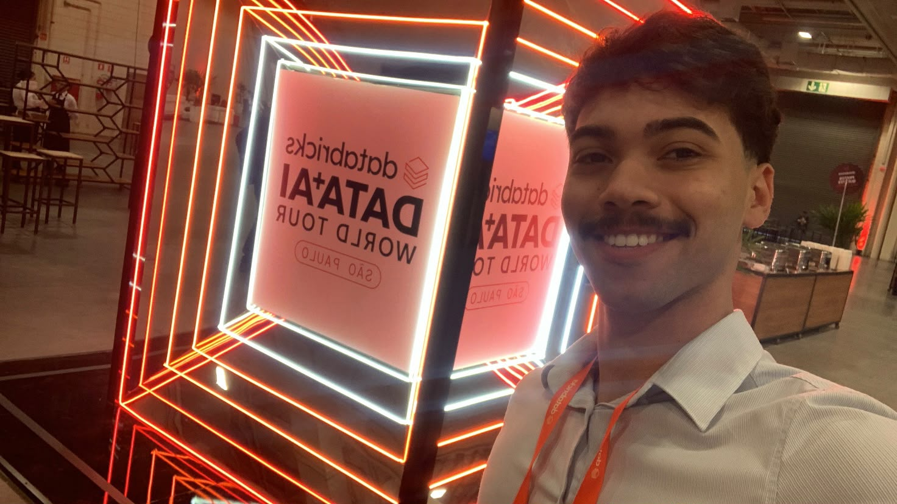

Analytics Engineer · Databricks · Vivo
Dados brutos entram. Decisões saem.
Sou Victor França. Construo pipelines ETL/ELT em Databricks na arquitetura Medallion, com governança no Unity Catalog e IA generativa com Genie Space.
- 0
- pipelines migrados do Informatica para o Unity Catalog
- Score HGU
- assumi o ownership, fiz engenharia reversa e redesenhei em Medallion
- AI Days
- projeto de IA/BI selecionado e apresentado no Databricks AI Days
- 0
- certificações pela Databricks Academy
01 / Método
Cada dado passa por três camadas antes de chegar a quem decide.
-
bronze
Ingerir sem perder nada
Trago o dado como ele nasce, com ingestão incremental de bancos como o Oracle VIC via Databricks SDK. Nada é descartado e tudo fica rastreável no Unity Catalog.
oracle → sdk → delta (raw) -
silver
Limpar, versionar, confiar
Padronizo, deduplico e versiono em Delta Tables com PySpark e Spark SQL, orquestrado por Databricks Workflows. É aqui que a regra de negócio, às vezes recuperada por engenharia reversa, vira código.
dedupe → merge → delta table -
gold
Servir para decidir
Tabelas prontas para consumo, modelos acompanhados no MLflow e agentes de IA generativa com Genie Space que respondem perguntas de negócio em linguagem natural.
serve → genie agent → decisão
02 / Projetos
Trabalho real, em produção.

03 / Sobre
Coloco dados confiáveis na mão de quem decide.
Sou Analytics Engineer na Vivo, focado em Databricks e arquitetura Lakehouse. Gosto do trabalho que ninguém vê: entender a regra escondida no legado, integrar dados críticos com rastreabilidade e transformar tudo em pipelines escaláveis e governados. Ajudei a levar o Genie Space, a IA generativa do Databricks, para o dia a dia da área.
- DatabricksLakehouse, Unity Catalog, Workflows, Repos
- DadosPySpark, Spark SQL, Delta Lake, ETL/ELT
- QualidadeData Governance, versionamento de dados
- ML e IAMLflow, Machine Learning, Genie Space
04 / Contato
Tem um dado difícil de colocar para trabalhar?
A mensagem chega direto em victor25franca@gmail.com. Se preferir algo mais rápido, me chame no WhatsApp.